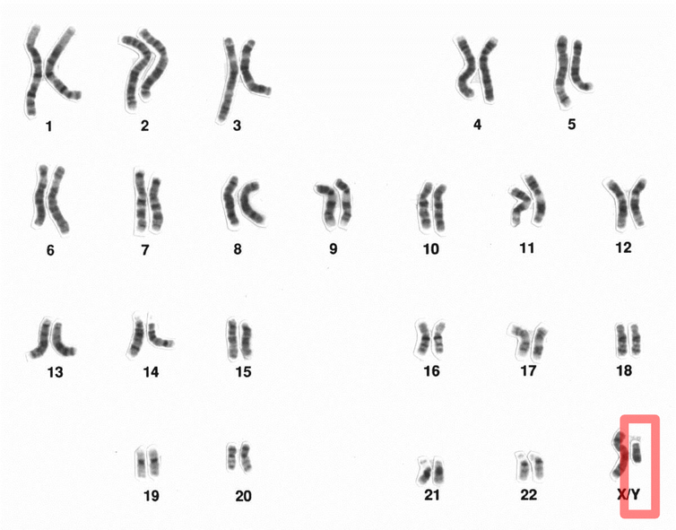
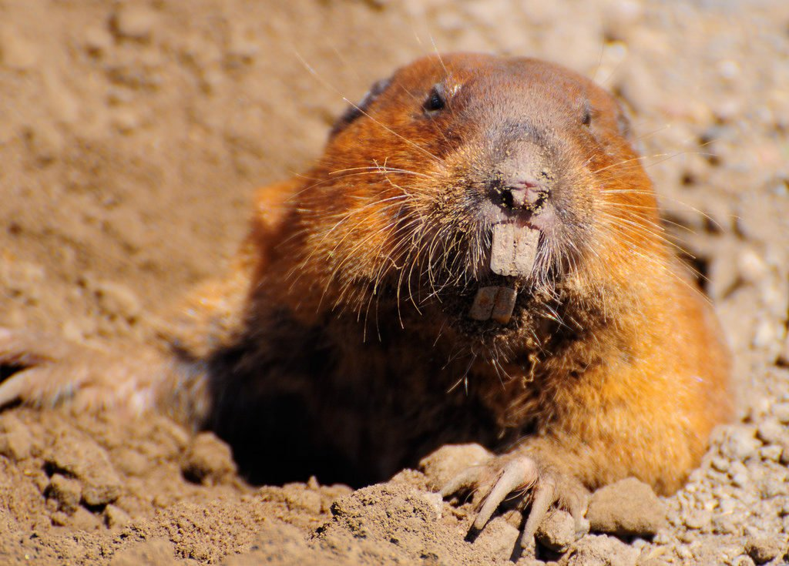

ဒါ့ထက်ဆိုးတာကတော့ ဒီဝိုင် ခရိုမိုဆုမ်းဟာ တဖြည်းဖြည်း အားနည်းလို့ လာနေပါတယ်တဲ့။ ဒါ့ကြောင့် အမျိုးသမီးတွေမှာ ကျန်းမာသန်စွမ်းတဲ့ X ခရိုမိုဆုန်း နှစ်ခုပိုင်ဆိုင်ပြီး အမျိုးသား တွေကတော့ ကျန်းမာတဲ့ X ခရိုမိုဆုမ်း တစ်ခုနဲ့ ချိနဲ့နဲ့ Y ခရိုမိုဆုမ်း တစ်ခုတို့ကို ပိုင်ဆိုင်နေပါတယ်။ ဒီနှုန်းအတိုင်း ဆက်သွားမယ်ဆိုရင် နောက် နှစ် ၄.၆ သန်းကြာရင် ကျွန်တော်တို့ရဲ့ ဝိုင် ခရိုမိုဆုမ်းဟာ မျိုးတုန်း ပေျာက်ကွယ်သွားမယ့် အန္ဓရာယ် ရှိနေပါတယ်။ နှစ် ၄.၆ သန်းဆိုတာ အကြာကြီးလို့ ထင်စရာ ရှိပေမယ့် ကမ္ဘာပေါ်မှာ သက်ရှိတွေ နေထိုင်လာတဲ့ နှစ် သန်း ၃၅၀၀ နဲ့ ယှဉ်လိုက်ရင် ခဏလေးပါ။
လွန်ခဲ့တဲ့ နှစ်သန်း ၁၆၆ တုန်းက နို့တိုက်သတ္တဝါတွေ စပေါ်စကတော့ ဝိုင်ခရိုမိုဆုမ်းဟာ ဒီလို မဟုတ်ခဲ့ပါဘူး။ အဲ့ဒီတုန်းက “ပရိုတို-ဝိုင်” ခရိုမိုဆုမ်းဟာ X ခရိုမိုဆုမ်းနဲ့ အရွယ်တူပါပဲ။ ဒါပေမယ့် ဝိုင်ခရိုမိုဆုမ်းမှာ မွေးရာပါ ပြဿနာ တစ်ခုရှိနေပါတယ်။ အဲဒါကတော့ သူဟာ အခြား ခရိုမိုဆုမ်း တွေလို တစ်စုံ (၂ ခု) မရှိပဲ တစ်ခုထဲ ရှိနေတာပါ။ နှစ်ခုရှိတဲ့ ခရိုမိုဆုမ်း တွေဟာ အချင်းချင်း မျိုးရိုးဗီဇ (Gene) တွေကို အပြန်အလှန် လဲလှယ်နိုင်တဲ့ အတွက် မကောင်းတဲ့ မျိုးရိုးဗီဇတွေကို အကောင်းတွေနဲ့ လဲပစ်နိုင်ပြီး ခရိုမိုဆုမ်းကို ပိုအားကောင်း လာစေပါတယ်။ ဝိုင်ခရိုမိုဆုမ်းကတော့ တစ်ကောင်ထဲဆိုတော့ သူ့မှာ မကောင်းတဲ့ မျိုးရိုးဗီဇတွေကို လဲပစ်လို့ မရပါဘူး။ သူဟာ အဖေကနေ သားဆီကို မျိုးဆက်ပေါင်းများစွာ မပြောင်လဲပဲ ဒီအတိုင်း လက်ဆင့်ကမ်းလာတာပါ။ ဒီ့အတွက် မကောင်းတဲ့ မျိုးရိုးဗီဇ တွေဟာ အကောင်းတွေနဲ့ ပြုပြင် လဲလှယ်ခွင့်မရတဲ့ အတွက် တဖြည်းဖြည်း ပျက်ဆီးလာတဲ့ ဝိုင်ခရိုမိုဆုမ်းဟာ တဖြည်းဖြည်း ရှုံ့ပြီး သေးလာတာကို အောက်က ပုံမှာ မြင်နိုင်ပါတယ်။ သူနဲ့ တွဲနေတဲ့ X ခရိုမိုဆုမ်းနဲ့ ယှဉ်ကြည့်ရင် သိသိသာသာကြီးကို သေးနေတာ တွေ့ရမှာပါ။


ဒါဆိုအမျိုးသားတွေ မျိုးတုန်းတော့မှာလား
ဝိုင်ခရိုမိုဆုမ်း ပေျာက်ကွယ်သွားတာ အမျိုးသားတွေ မျိုးတုန်းသွားမယ်လို့တော့ ဆိုလိုတာ မဟုတ်ပါဘူး။ ပွေးတွေလို ဝိုင်ခရိုမိုဆုမ်း မပါတဲ့ သတ္တဝါ တွေမှာတောင် မျိုးပွားဖို့ အထီးအမ လိုအပ် ပါသေးတယ်။ ဒီလို ဝိုင်ခရိုမိုဆုမ်း မပါတဲ့ သတ္တဝါတွေမှာ ကျားမခွဲခြားပေးတဲ့ SRY ဆိုတဲ့ မျိုးရိုးဗီဇဟာ အခြား ခရိုမိုဆုမ်းပေါ်ကို ပြောင်းရွှေ့သွားပါတယ်။ ဒီ့အတွက် သတ္တဝါတွေတဟာ ဝိုင်ခရိုမိုဆုမ်း မပါလဲ ဆက်မျိုးပွားနိုင် ကြပါတယ်တဲ့။ ဒါပေမယ့် ဒီ SRY မျိုးရိုးဗီဇကို လက်ခံရရှိတဲ့ ခရိုမိုဆုမ်းဟာလဲ ဝိုင်ခရိုမိုဆုမ်းလိုပဲ မဖြည်းဖြည်း ပျက်စီးလာ နိုင်တဲ့ အန္တရယ် ရှိနေပါတယ်။ဝိုင်ခရိုမိုဆုမ်းနဲ့ ပါတ်သက်တဲ့ နောက်ထူခြားချက် တစ်ခုကတော့ သူဟာမျိုးပွားဖို့အတွက် လိုအပ်ပေမယ့် ဓါတ်ခွဲခန်းမှာ ပွားတဲ့ ဖန်ပြွန်သန္ဓေသား ဆိုရင် သူမလိုပါဘူးတဲ့။ ဒါ့ကြောင့် နောင်တစ်ချိန် လူတွေ သိပ္ပံအကူနဲ့ ဖန်ပြွန်သန္ဓေနည်းနဲ့ မျိုးပွားတဲ့ ခေတ်တစ်ခေတ် ရောက်မလာဘူးလို့ မပြောနိုင်ပါဘူး။ ဒါကတော့ နောက် နှစ် ၄.၆ သန်းအကြာ ကျွန်တော်တို့ရဲ့ မျိုးဆက်တွေ ပူရမဲ့ ပြဿနာပဲ ဖြစ်ပါတယ်။
Photo credits:
(1) RyanMcGuire | Pixaby
(2) National Human Genome Research Institute
(3) Oscar Penalva | Flickr
Source: Smithsonian | Sorry, Guys: Your Y Chromosome May Be Doomed